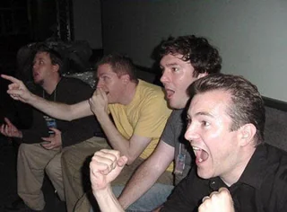

@reyszer
Membro da rede / Área restrita
E aí? Eu sou Reyszer, pronuncia-se Rái-zer(PT-BR) ou Rizer(EN-US)
Gosto de Ciências Exatas, debates sobre consequências de decisões de macroescala ou de microescala, discussões sobre temas até então ficcionais com existência real discutida(como viagem no tempo ou buracos de minhoca), gosto de receber opiniões e críticas construtivas!
Sou da área da computação, e sim, esse CSS foi feito por mim(apesar da minha preferência pelo BackEnd)
Eu gosto de gatos, leões-marinhos, morsas, raposas(principalmente as do ártico) e papagaios.
--- FOTO DO MEIO ---

Sinceramente, não sei como fiz este CSS, não gosto da sintaxe do HTML e muito menos da do CSS, me sinto em território hostil.
Sou Brasileiro, aliás.